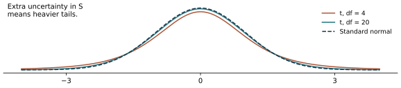
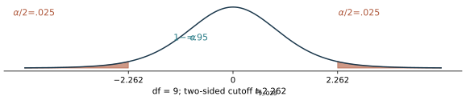
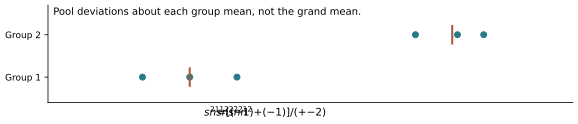
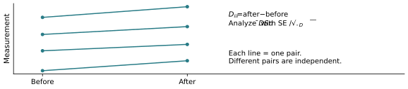

Chapter 9: Small-Sample Inference
The student notes follow the current 62-page lecture PDF. The online/classroom calculations are corrected using the data printed on slide PDF p. 47; see notes pp. 12–14.
Choose a topic below to move between the notes and slides. Page numbers refer to the PDF viewer. Page links work in supporting viewers; some mobile or embedded viewers open at page 1. If that happens, enter the page number shown here. The slides have a linked navigation strip above the original page; their content and page order are unchanged.
November 5 revision: notation follows the course slides; figures connect the equations to their meaning. Notes retain their existing page numbers. On a small screen, swipe a wide figure or open its full-size view.
The connection to Chapter 8

Degrees of freedom
t curves, assumptions and table notation
One-mean confidence intervals

Diamond example
Why the t interval is wider
One-mean tests and the CI connection
Paint-coverage example
Independent means and pooled variance

Online/classroom example: confidence interval
Pooled tests and the online/classroom example
Paired designs and the tire example
